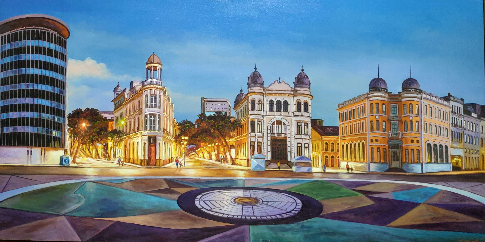

Marco Zero

A Praça Rio Branco, também conhecida como Marco Zero, é um espaço público localizado no bairro do Recife da cidade homônima, capital de Pernambuco.
O local fica próximo ao Porto do Recife e abriga o Marco Zero da cidade do Recife.
É deste marco que são feitas todas as medidas oficiais de distâncias rodoviárias locais.
A popularização do nome Marco Zero aconteceu desde 1938, devido à instalação do símbolo geográfico na parte central da praça.
Ele foi uma doação do Automóvel Clube de Pernambuco.
Além disso, há nela uma estátua de bronze de 2,80 metros, de autoria do escultor francês Félix Charpentier.